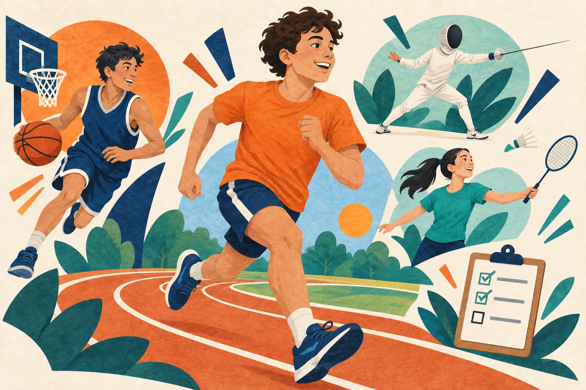

DAY01
Set my goal
15 min · PrepareI will write down why I want to run. I will choose a flat, safe route with a parent or PE teacher and prepare comfortable trainers.
My reason for running is ___.
Discover our favourite sports.
Explore our habits. Find a new challenge.

Featuring my 21-day running growth plan.
Start gently. Find a comfortable pace.
Run-day totals include a 5-minute warm-up walk and a 5-minute cool-down walk; times are rounded.
I will run at an easy pace, walk more when needed, and stop and tell an adult if I feel pain or dizziness.
I will write down why I want to run. I will choose a flat, safe route with a parent or PE teacher and prepare comfortable trainers.
My reason for running is ___.
I will jog for 1 minute and walk for 90 seconds, six times. I will move at an easy pace and record how I feel afterwards.
How did my first session feel?
I will take a day off running. I will learn five English words: pace, warm-up, cool-down, stamina and recovery.
Which word is new to me?
I will repeat six rounds of 1 minute jogging and 90 seconds walking. I will keep my shoulders relaxed and avoid rushing.
Can I move at a comfortable pace?
I will take a relaxed walk with my family. I will notice how my legs feel and prepare my water bottle for the next run.
How do my legs feel today?
I will repeat the same run-walk session as Day 2. I will compare how it feels, without trying to beat my speed.
Does this session feel easier?
I will rest from running and write three sentences about my first week. I will celebrate one small achievement.
This week, I am proud of ___.
Stay steady. Give myself time to recover.
Run-day totals include a 5-minute warm-up walk and a 5-minute cool-down walk; times are rounded.
I will run at an easy pace, walk more when needed, and stop and tell an adult if I feel pain or dizziness.
I will plan three running sessions with rest days between them. I will check the weather and choose a suitable time to go outside.
When and where will I run?
If Week 1 felt comfortable, I will jog for 90 seconds and walk for 90 seconds, six times. Otherwise, I will repeat the Week 1 session.
Was the pace comfortable?
I will take a day off running and review my notes. I will write about how sleep and rest help me get ready for exercise.
What helps me feel rested?
I will repeat the session from Day 9. I will keep a pace that lets me talk comfortably and take extra walking breaks if needed.
Could I talk while jogging?
I will enjoy a gentle walk and notice my surroundings. I will write two English sentences describing my favourite part of the route.
What did I see on my walk?
I will repeat my Week 2 run-walk session. I will record the rounds I completed and how I felt, then compare my notes with Day 9.
Rounds completed: ___ / 6
I will rest from running and review my second week. I will choose one habit to keep, such as starting slowly or warming up.
One useful habit is ___.
Enjoy the journey. Keep a steady habit.
Run-day totals include a 5-minute warm-up walk and a 5-minute cool-down walk; times are rounded.
I will run at an easy pace, walk more when needed, and stop and tell an adult if I feel pain or dizziness.
I will review my notes with a parent or PE teacher. If Week 2 still feels hard, I will repeat it instead of adding more running time.
Which session is right for me?
If I feel ready, I will jog for 2 minutes and walk for 90 seconds, five times. Otherwise, I will repeat my Week 2 session.
How did the longer jogging parts feel?
I will take a day off running. I will write a short note about one challenge and how I handled it during my last session.
When it felt difficult, I ___.
I will repeat the session I chose on Day 16. I will focus on an easy rhythm and finish with a walk rather than a sprint.
What helped me keep a steady rhythm?
I will take a gentle walk or rest if I feel tired. I will read my Day 2 notes and think about what has changed.
What feels different from the first week?
I will repeat my chosen Week 3 session. I will record my jogging time and how I feel. I will compare my comfort and confidence with Week 1.
Jogging time: ___ min. I felt ___.
I will rest and write a short reflection on my 21-day journey. I will set one realistic running goal for next month and keep rest days in my plan.
Next month, I will ___.
Reference for warm-up and rest: NHS · Couch to 5K. This is a gentle 21-day school plan, adjustable with my PE teacher.